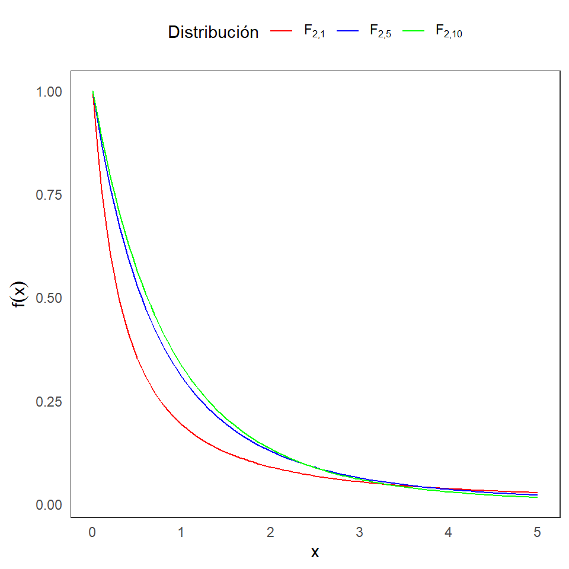
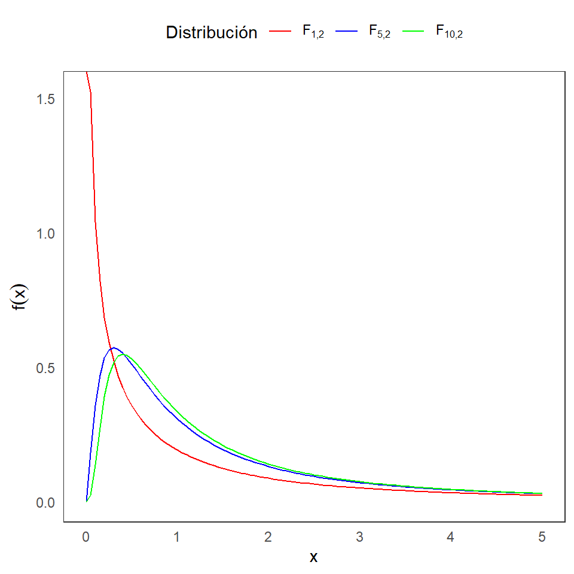

XS3310 Teoría Estadística
I Semestre 2024
Escuela de Estadística, UCR.
Distribución de t-Student
Distribución F de Fisher
Definición 3.2: Sean dos variables aleatorias independientes X y Y, tal que \(X \sim N(0,1)\) y \(Y \sim \chi^2_{m}\). Defina:
\[T=\frac{X}{\sqrt{\frac{Y}{m}}}.\] La distirbución de \(T\) se llama una distribución t-Student con \(m\) grados de libertad, y se denota como \(t_m\).
La función de densidad es: \[f(x|m)= \frac{\Gamma\left(\frac{m+1}{2}\right)}{(m\pi)^{1/2}\Gamma(\frac{m}{2})}\left(1+\frac{x^2}{m}\right)^{\frac{-(m+1)}{2}},~~~ -\infty<x<\infty.\]
Definición 3.3: Sean dos variables aleatorias independientes X y Y, tal que \(X \sim \chi^2_{m}\) y \(Y \sim \chi^2_{n}\), con \(m\) y \(n\) enteros positivos. Defina:
\[F=\frac{\frac{X}{m}}{\frac{Y}{n}}.\] La distirbución de \(F\) se llama una distribución F con \(m\) y \(n\) grados de libertad, y se denota como \(F_{m,n}\).
La función de densidad es: \[f(x|m,n)= \frac{\Gamma\left(\frac{m+n}{2}\right) m^{m/2}n^{n/2}}{\Gamma(\frac{m}{2})\Gamma(\frac{n}{2})} \frac{x^{m/2-1}}{(mx+n)^{(m+n)/2}},~~~ 0<x,\] y \(f(x|m,n)=0\) para \(x\leq 0\).


Teorema 3.1:
Si \(X\) tiene una distribución \(F\) con \(m\) y \(n\) grados de libertad, entonces \(Y=1/X\) también tiene una distribución \(F\) con \(n\) y \(m\) grados de libertad.
Si \(X\) tiene una distribución t con \(m\) grados de libertad, entonces \(X^2\) tieneuna distribución \(F\) con \(1\) y \(m\) grados de libertad.
Sea \(X_{1}, X_{2}, ... , X_{n}\) una muestra aleatoria de una población Normal con media \(\mu\) y variancia \(\sigma^2\), donde \(\mu\) es desconocido pero \(\sigma^2\) es conocido. Vamos a construir un intervalo de confianza bilateral para \(\mu\) con probabilidad \(1-\alpha\).
Comosidere el pivote a \(Z = \dfrac{\overline{X} - \mu}{\dfrac{\sigma}{\sqrt{n}}}\), ya que \(Z \sim N(0,1)\). Luego procedemos a encontrar los valroes \(a\) y \(b\) que satisfacen \(P(a \leq Z \leq b) = 1-\alpha\) y \(P(Z < a) = P(Z > b) = \frac{\alpha}{2}\).
Tenemos que
\(P(z_{\frac{\alpha}{2}} \leq Z \leq z_{1-\frac{\alpha}{2}}) = 1-\alpha\)
Cuantiles de una distribución N(0,1)
\[P(a \leq Z \leq b) = P\left(-z_{1-\frac{\alpha}{2}} \leq \dfrac{\overline{X} - \mu}{\dfrac{\sigma}{\sqrt{n}}} \leq z_{1-\frac{\alpha}{2}} \right)\]
\[= P\left( \overline{X} - z_{1-\frac{\alpha}{2}} \dfrac{\sigma}{\sqrt{n}} \leq \mu \leq \overline{X} + z_{1-\frac{\alpha}{2}} \dfrac{\sigma}{\sqrt{n}} \right) = 1-\alpha\]
\[T = \dfrac{\overline{X} - \mu}{\dfrac{s}{\sqrt{n}}}\]
\[P(a \leq T \leq b) =P(t_{\frac{\alpha}{2},n-1} \leq T \leq t_{1-\frac{\alpha}{2},n-1}) = P\left(-t_{1-\frac{\alpha}{2},n-1} \leq \dfrac{\overline{X} - \mu}{\dfrac{S}{\sqrt{n}}} \leq t_{1-\frac{\alpha}{2},n-1} \right).\]
Si despejamos el valor de \(\mu\), obtenemos el intervalo \(\overline{X} \pm t_{\frac{\alpha}{2}, n-1} \dfrac{s}{\sqrt{n}}\).
Por lo tanto podemos concluir que con una confianza del \((1-\alpha)\%\) el intervalo \(\overline{X} \pm t_{\frac{\alpha}{2}, n-1} \dfrac{s}{\sqrt{n}}\) contiene el verdadero valor de \(\mu\).
Ahora supongamos que tenemos dos poblaciones Normales e independientes y que obtenemos una muestra de cada una.
Sean \(X_{1}, X_{2}, ... , X_{n}\) y \(Y_{1}, Y_{2}, ... , Y_{m}\) estas dos muestras aleatorias, tal que \(X_{j} \sim N(\mu_{1}, \sigma^{2}_{1})\) y \(Y_{i} \sim N(\mu_{2}, \sigma^{2}_{2})\), donde \(\mu_{1}\) y \(\mu_2\) son parámetros desconocidos y \(\sigma^{2}_{1}\) y \(\sigma^{2}_{2}\) son parámetros conocidos. Nos interesa construir un intervalo bilateral, con una confianza del \((1-\alpha)\%\), para \(\mu_{1} - \mu_{2}\).
Recordemos que \(\overline{X} \sim N\left(\mu_{1}, \dfrac{\sigma^{2}_{1}}{n}\right)\) y \(\overline{Y} \sim N\left(\mu_{2}, \dfrac{\sigma^{2}_{2}}{m}\right)\). Además, \(\overline{X} - \overline{Y}\) se distribuye Normal con media \(\mu_{1} - \mu_{2}\) y variancia \(\dfrac{\sigma^{2}_{1}}{n} + \dfrac{\sigma^{2}_{2}}{m}\).
Estandarizando dicha variable, tenemos un pivote:
\[Z = \dfrac{(\overline{X} - \overline{Y}) - (\mu_{1} - \mu_{2})}{\sqrt{\dfrac{\sigma^{2}_{1}}{n} + \dfrac{\sigma^{2}_{2}}{m}}}\]
\[P(a \leq Z \leq b) = P\left(-z_{1-\frac{\alpha}{2}} \leq \dfrac{(\overline{X} - \overline{Y}) - (\mu_{1} - \mu_{2})}{\sqrt{\dfrac{\sigma^{2}_{1}}{n} + \dfrac{\sigma^{2}_{2}}{m}}} \leq z_{1-\frac{\alpha}{2}} \right)=1-\alpha.\]
Nota: Si fuese el caso donde las variancias poblaciones son conocidas (i.e. \(\sigma^{2}_{1} = \sigma^{2}_{2} = \sigma^{2}\)) Entonces podriamos escribir el intervalo como:
\[(\overline{X} - \overline{Y}) \pm z_{1-\frac{\alpha}{2}} \cdot \sigma \sqrt{\dfrac{1}{n} + \dfrac{1}{m}}.\]
¿Por qué es importante el supuesto de homoscedasticidad (\(\sigma^{2}_{1} = \sigma^{2}_{2} = \sigma^{2}\))? Para poder encontrar un pivote satisfactorio.
Considere \[T = \dfrac{Z}{\sqrt{\dfrac{W}{v}}}\] donde \(Z \sim N(0,1)\) y \(W \sim \chi^{2}(v)\). Para este caso podemos usar la misma \(Z\) que usamos anteriormente:
\[Z = \dfrac{(\overline{X} - \overline{Y}) - (\mu_{1} - \mu_{2})}{\sigma \sqrt{\dfrac{1}{n} + \dfrac{1}{m}}}\]
\[W = \dfrac{(n-1)S^{2}_{1} + (m-1)S^{2}_{2} }{\sigma^{2}} \sim \chi^{2}_{(n+m-2)}\]
Si procedemos a dividir esta ji-cuadrado entre sus grados de libertad obtenemos: \[\dfrac{W}{v} = \dfrac{(n-1)S^{2}_{1} + (m-1)S^{2}_{2} }{\sigma^{2}(n+m-2)}\]
\[T = \dfrac{(\overline{X} - \overline{Y}) - (\mu_{1} - \mu_{2})}{S_{p} \sqrt{\dfrac{1}{n} + \dfrac{1}{m}}}\]
Esta es una t-student con \(n+m-2\) grados de libertad y la podemos usar como pivote pues cumple todas las condiciones y ya no está en términos de parámetros desconocidos.
El procedimiento a seguir es similar al otro caso donde teniamos una t-student y luego de desarrollarlo obtenemos el intervalo
\[\displaystyle (\overline{X} - \overline{Y}) \pm t_{1-\frac{\alpha}{2}, n+m-2} \cdot S_{p} \sqrt{\frac{1}{n} + \dfrac{1}{m}}\]
En los ejercicios 9.8 y 9.9 de Casella y Berger, se utiliza la siguiente tabla para clasificar las funciones de densidad según forma. En esta tabla se refieren a la mayoría de distribuciones de la familia Exponencial, en las cuales la función de densidad se puede reescribir siguiendo la forma de la primera columna.
| Forma | Tipo | Pivote |
|---|---|---|
| \(f(x-\mu)\) | Posición | \(\bar{X}-\mu\) |
| \(\dfrac{1}{\sigma}f(x/\sigma)\) | Escala | \(\dfrac{\bar{X}}{\sigma}\) |
| \(\dfrac{1}{\sigma}f\left( \dfrac{x-\mu}{\sigma}\right)\) | Posición-Escala | \(\dfrac{\bar{X}-\mu}{S}\) |
Para entender las 3 formas, veamos los siguientes ejemplos:
Sea \(X \sim N(\mu, 1)\), entonces la función de densidad es:
\[f(x) = \dfrac{1}{\sqrt{2\pi}} e^{\dfrac{-1}{2}(x-\mu)^2} = g(z)\] en donde \(z = x-\mu\), y \(g(z)=\dfrac{1}{\sqrt{2\pi}} e^{\dfrac{-1}{2}z^2}\).
Sea \(X \sim N(0, \sigma^2)\), entonces la función de densidad es:
\[f(x) = \dfrac{1}{\sigma}\dfrac{1}{\sqrt{2\pi}} e^{\dfrac{-1}{2}(x/\sigma)^2} = \dfrac{1}{\sigma} g(z)\] en donde \(z = x/\sigma\), y \(g(z)=\dfrac{1}{\sqrt{2\pi}} e^{\dfrac{-1}{2}(z)^2}\).
Sea \(X \sim N(\mu, \sigma^2)\), entonces la función de densidad es:
\[f(x) = \dfrac{1}{\sigma}\dfrac{1}{\sqrt{2\pi}} e^{\dfrac{-1}{2}\left(\dfrac{x-\mu}{\sigma}\right)^2} = \dfrac{1}{\sigma} g(z)\] en donde \(z = \dfrac{x-\mu}{\sigma}\), y \(g(z)=\dfrac{1}{\sqrt{2\pi}} e^{\dfrac{-1}{2}(z)^2}\).
Estimación por intervalos, método del pivote. Fórmulas para las estimaciones por intervalo más comunes (media, diferencias de medias para distribuciones normales),
Intervalos de confianza para variancias, y para muestras grandes.